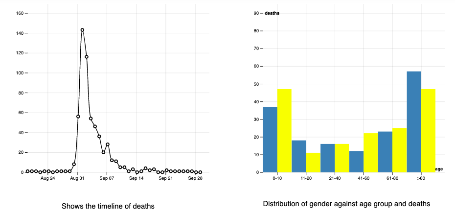
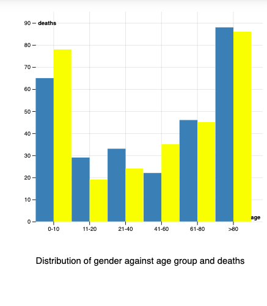

About:
The London's cholera epidemic 1854 is created by Priyanka Surapaneni for
H517: Visualization Design, Analysis, & Evaluation course project.
Objective : To reproduce Dr.John Snow's epidemic map as an interactive map using D3.js
The data - streets, pumps and death locations and other demographic data are provided as the part this project -
Project Details
Design:
1. Layout
a. First, I decided to render the map with labels and time series graph as shown in above left side image.
Later, I rearranged the layout to include dropdown, histogram plot
to right side and moved the labels to bottom as shown above right side image.
2.Visualizations
a. Created stable interactive map with streets, pumps and deaths locations.
b. Map with 5 Street names labels, work house and brewery along with Zoom and pan functions within SVG view-box.
c.Interactive time series graph with number of deaths per each day during the epidemic period and cursor movement that reflects on map.
d. Drop down menu for showing according to gender and age on map.
e.Bar graph for age and gender distribution and change according to date.

3.Legend and colors
a.I have used color oracle to check the deuteranopia common color blindness and selected d3.schemeSet3 for gender colors and d3.schemePaired for age group colors.
4.Findings

a.Deaths within age group of 1-10 and >80 are more compare to other age groups and death rate between males and females are not significant.
b.From time series plot deaths peaked on September 1st and most of deaths are between August 31st to September 10th.
5.References
D3 Documentation